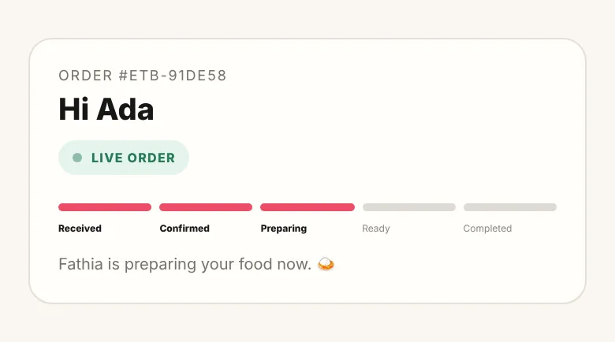
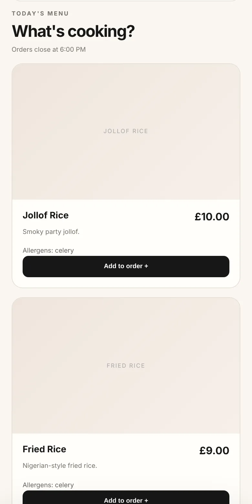

Case study
Eatsbythia
Online ordering, card payments and a live kitchen dashboard for a home-based Nigerian food business.
The problem
Fathia cooks Nigerian food from home and sells it across Manchester. Customers saw her menu on Snapchat and ordered over WhatsApp, so every order, total and payment had to be handled by hand in her messages.
She needed a simple way for customers to order and pay, and one place to see and manage every order on the day, without changing how she talks to her customers.
What I built
- A mobile-first ordering site. Customers browse today's menu, check allergens, pay by card and follow their order as it moves through each stage.
- A live kitchen dashboard. Paid orders appear instantly with a sound alert. Fathia moves each order from confirmed to ready, messages customers on WhatsApp, and sees today's sales.
- Menu and opening controls. She can change prices, mark dishes sold out, update allergens and close orders for the day, without touching any code.



How an order works
The website is static and hosted on GitHub Pages. Anything that involves money or customer data runs on the server in Supabase Edge Functions, never in the browser.
- Customer checks outThe browser sends dish IDs and quantities, never prices.
- Server prices the orderA database function looks up today's prices and saves the order as unpaid.
- Customer pays on StripeStripe's hosted checkout takes the card, so card details never touch my code.
- Webhook confirms paymentStripe tells the server directly. Only this signed message can mark an order as paid.
- Kitchen is alertedSupabase Realtime pushes the paid order to Fathia's dashboard with a sound.
- Customer tracks itA private link from the payment page shows each stage, with no account needed.
An order the customer abandons at the payment page never reaches the kitchen. Stripe expires it, and the server cancels it.
Key decisions
The server sets every price
Anything sent from a browser can be edited. Prices are looked up on the server from the menu, so nobody can pay £1 for a £15 platter.
Only Stripe can mark an order paid
The return to the site after payment is only for the customer. Payment is confirmed by a signed webhook, and if saving fails, the server asks Stripe to retry so no paid order goes missing.
Customer data stays private
Row-level security means only Fathia's login can read orders. Customers track an order with a private token, or their order number and phone number, and never see anyone else's details.
Opening hours are enforced on the server
The cut-off time and "close orders" switch are checked in UK time on the server, so a customer can't order after closing by leaving a page open.
How it evolved
- PrototypeA single HTML file using the browser's storage to fake a live connection between the customer and kitchen views.
- Real databaseMoved to Supabase, with real-time updates between phones and a hosted build through GitHub Actions.
- Card paymentsAdded Stripe Checkout and a webhook, so orders only reach the kitchen once they're paid.
- Security reviewFound that the public order lookup could expose customer details, and that the payment functions failed on start-up. I locked down database access, rebuilt order tracking and fixed both.
- End-to-end testingTested paid, abandoned and closed-hours orders in Stripe test mode before launch.
What I learned
- Working code isn't the same as safe code. The first version worked, but a security review showed how much customer data a public key could reach.
- The browser can't be trusted. Prices, payments and opening hours all have to be decided on the server.
- Test the whole journey. Each part worked alone, but only a full test order proved the system worked.
What's next
Delivery fees and a refund button in the kitchen dashboard.